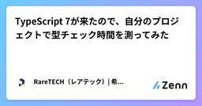

RareTECH（レアテック）| 希少型エンジニア育成専門ITスクールさんのフィード
https://zenn.dev/var
希少型エンジニア育成専門ITスクールのRareTECH（レアテック）公式アカウントです。実務でも役立つITの専門知識をわかりやすく解説します。
フィード

TypeScript 7が来たので、自分のプロジェクトで型チェック時間を測ってみた
RareTECH（レアテック）| 希少型エンジニア育成専門ITスクールさんのフィード
2026年7月8日、TypeScript 7.0が正式リリース（GA）されました。目玉は、コンパイラをGoで書き直したネイティブ実装です。公式アナウンス（Announcing TypeScript 7.0）は「10x faster」とうたっています。ただ、その10倍はVS Codeのような巨大アプリの「フルビルド」で測った数字。日々くり返して待たされるのは型チェックなので、そこだけ切り出して自分のプロジェクトで測ると本当に速いのか、気になりました。そこでtsc（6系）とtsc（7系＝Go実装）を同じコードに当てて計測してみます。結論を先に置くと、型チェックは約4.6倍まで速くなり、10...
12時間前

WSL Containers（wslc）入門｜Docker Desktop不要
RareTECH（レアテック）| 希少型エンジニア育成専門ITスクールさんのフィード
WSL 2.9.3で公開プレビューになったwslc.exeを使うと、Docker Desktopをインストールせずに、Windows上でLinuxコンテナをビルド・実行できます。本記事では、hello-worldの実行、nginxのポート公開、Containerfileからのイメージビルドまでを、実際にWindows 11で動かして確かめます。Dockerを普段使っているWindows開発者向けに、docker runからwslc runへ最短で移れるよう、実行したコマンドと出力、そしてDocker Desktopとの違いをまとめます。公開プレビューのため仕様は変わることがあります（G...
10日前
Apple containerでmacOSにLinuxコンテナ環境を作る（ハンズオン）
RareTECH（レアテック）| 希少型エンジニア育成専門ITスクールさんのフィード
Apple containerを使うと、Docker Desktopを入れずにmacOS上でLinuxコンテナを動かせます。この記事はDocker経験者向けのハンズオンです。Apple SiliconのMacへApple containerを導入し、イメージ取得からコンテナ起動・基本操作・永続的なLinux環境づくりまでを手順化しました。docker runに慣れた人が最短でcontainer runにたどり着けるよう、コマンドと表示例、そしてDockerとの考え方の違いをまとめました。 この記事の要点Apple containerとは、macOS上でLinuxコンテナを「1コ...
16日前
VSCodeインストール後にやること｜初心者の環境構築ガイド
RareTECH（レアテック）| 希少型エンジニア育成専門ITスクールさんのフィード
VSCodeはインストールしただけでも使えますが、初期設定や拡張機能を足すと、学習がぐっと進めやすくなります。ただ、初期設定・拡張機能・ショートカット・デバッグ・Linuxコマンドと項目が多く、どこから手をつけるか迷いやすいところです。AIと共にコーディングする時代でも、AIと人が使いやすい開発環境を用意するのはまだ人が担っています。「Visual Studio Codeをインストールしただけで良いの？」「Visual Studio Code以外に何が必要？」と迷う方もいるはずです。記事を読みながら、自分に必要な機能や設定を取り入れてみてください。VSCodeインストール後に何を用意す...
1ヶ月前
AIがプログラミングの8割を担う時代、初心者エンジニアが学ぶべき4つの層
RareTECH（レアテック）| 希少型エンジニア育成専門ITスクールさんのフィード
エンジニアのAI活用が急速に進んでいます。OpenAIの社長であるGreg Brockman氏が、Sequoia Capital主催のAI Ascent 2026で示した数字があります。エージェント型のコーディングツールが生成するプログラムの割合が、2025年12月の1ヶ月で20%から80%に跳ね上がった、というものです。GoogleのSundar Pichai氏もGoogle Cloud Next 2026のブログ投稿で、AIが生成しエンジニアが承認した新規のプログラムが社内の75%に達したと述べています。AnthropicのDario Amodei氏はCouncil on Fore...
2ヶ月前
Claude Code入門｜Linuxコマンド初心者にも始められる安心ガイド
RareTECH（レアテック）| 希少型エンジニア育成専門ITスクールさんのフィード
Claude Codeを使ってみたいけれど、「何から始めればいいの？」や「自分の作業の何を任せればいいの？」という問いをよく見かけます。Claude Codeは便利ですが、Linuxコマンドの基礎や安全に使うための知識を押さえておくと、より安心して活用できます。まずは、Claude Codeがどんなツールなのかから見ていきます。 Claude CodeとはClaude Codeとは、ターミナル上で動作するAIエージェントツールです。プログラムの編集やコマンド実行、複数ファイルをまたぐ作業まで、ターミナルの中で完結できます。通常のAIチャットが「相談相手」だとすると、Claude...
2ヶ月前
Cloud FunctionsからCloudRun Jobsへの変更理由
RareTECH（レアテック）| 希少型エンジニア育成専門ITスクールさんのフィード
はじめに株式会社varの開発に携わってるitoです。みなさんは、バッチ処理をどのように開発してますか？AWSのLambdaやECS on Fargate、Google CloudのCloudFunctionsやCloudRunをスケジューラと共に使ってバッチ処理を実装する際に、APIサーバで定義したモデルや関数を再度定義してませんか？この記事では、妥協せずにDRYの原則に則ってリファクタリングした過程でCloud FunctionsからCloud Run Jobsへ変更する必要があった理由について紹介します。 前提となる環境ディレクトリ構成とインフラ構成は下記の通りです...
3年前
実務を意識したTailwind CSSの基本的な使い方
RareTECH（レアテック）| 希少型エンジニア育成専門ITスクールさんのフィード
はじめに株式会社 var でインターンをしているユウマです。実務に入る前の研修で、現役フロントエンドエンジニアにコードレビューを受け、基本的な Tailwind の使い方を教わりました。研修中に得た知識を共有することで、同じく学習途中の方々に役立つきっかけになればと思います。 この記事の対象者Tailwind に興味を持ち、基本的な書き方を学びたい方ハッカソンなどのチーム開発で Tailwind を効果的に使用したい方なんとなくで Tailwind を使っている方（研修開始前の自分） この記事のゴールTailwind の基本設定とカスタマイズ方法を理解する効...
3年前
Python(Django)のStripe実装にWebhookを使ってイベントを受け取る②
RareTECH（レアテック）| 希少型エンジニア育成専門ITスクールさんのフィード
はじめに株式会社var でインターンをしているひらはらです。先日PythonのフレームワークであるDjangoを用いて決済サービスであるStripeの実装を行いました。Stripeを実装した際の記事については以下より御覧ください。https://zenn.dev/var/articles/65785548e340fcその際、ユーザーのサブスクリプション処理が失敗した際にStripe側で発生したイベントをWebアプリケーション側でも受信し、任意の処理を実装する必要があったため、StripeのWebhookを利用した実装を行いました。 Webhookとは？Webhookを利...
4年前
Next.js(Typescript) + Prettier + ESLintを用いた環境構築①【vscode】
RareTECH（レアテック）| 希少型エンジニア育成専門ITスクールさんのフィード
はじめに株式会社var でインターンをしているひらはらです。先日新しいプロジェクト立ち上げに伴ってNext.js(TypeScript)とPrettier、ESLintの環境構築を行いました。その際の手順についてこちらにまとめます。Next.jsTypescriptESLintPrettierフロントエンドの開発においてESLintとPrettierの環境構築は必須なため、是非ご閲覧下さい。 環境作成環境は以下のとおりです。- OS: Mac(m1)- ブラウザ: Google Chrome- Node.js: v16.13.0- エディター: vsc...
4年前
Python(Django)でStripeによる決済システムを導入する①
RareTECH（レアテック）| 希少型エンジニア育成専門ITスクールさんのフィード
株式会社 var でエンジニアインターンをしているひらはらです。本記事では、決済サービスであるStipeをサイト内へ導入したので紹介します。 背景弊社では RareTECH という IT スクールを運営しており、その中で受講生の学習が円滑に進むように過去授業の閲覧や講義日程、受講生の一覧情報等を確認できるユーザー管理サイト(ポータルサイト)を提供しています。これまで入会する方には Line から PayPal の決済リンクへ飛んでもらい決済をして頂いていましたが、Line への登録・決済・ユーザー管理サイトへの登録等、フローが複雑になりつつありました。そこで、ユーザー管理サイト...
5年前
Cloud Functionsでメモリ不足になった話
RareTECH（レアテック）| 希少型エンジニア育成専門ITスクールさんのフィード
株式会社var CTOのSleekです。本日は、GCPのCloud Functionsの中のとある関数でメモリ不足になったことについて書きます。 概要GCPのアラートでCloud Functionsでメモリ不足で関数が落ちたことが通知される調査すると時間が経つにつれメモリ使用量が増大していくことが確認できた原因はFirestoreなどをサービスを利用するためのclientをCloseしていなかったからであった Google Cloud FunctionsについてGoogle Cloud Functions(GCF)はGCPが提供するサーバレス・FaaS(Functi...
5年前
開発者20名未満のプロダクト開発チームの組織管理について
RareTECH（レアテック）| 希少型エンジニア育成専門ITスクールさんのフィード
株式会社var CEOのfurusatoです。本日は、弊社におけるプロダクト開発手法について共有します。開発人数5-15名程度の小規模ベンチャーにおける、エンジニア以外のマーケターやデザイナーも含めた開発手法について何か学びになればと思います。 概要少ないリソースを最大限に引き出すためには、戻し0の構成を心がけたなんでも屋さんがでてきましまうので、Roleによる区分を取り入れたコミュニケーションフローを可視化した 前提開発人数5-15名のスタートアップなんでも屋さんがいるコーダー兼、デザイナーCTO、兼コーダー自社開発 or 丸投げな受託開発など...
5年前
弊社の開発手法とその変遷について
RareTECH（レアテック）| 希少型エンジニア育成専門ITスクールさんのフィード
株式会社var CTOのsleekです。こちらの記事では、弊社の開発手法の変遷について書きます。スタートアップにおけるリアルな開発手法として参考になれば幸いです。 概要チーム開発未経験が多いスタートアップでのリアルな開発手法についてどのようにして開発手法を変えていったかについて内容はBest Practiceということではなく、あくまで弊社が取り組んでいるBetter Practiceだと理解して頂きたい。 まとめいきなり大きなプロジェクトのやり方を真似しない手探りで少しずつ新しい手法などを追加していく 背景弊社では、オンラインハンズオン学習プラッ...
5年前
エンベーダー開発秘話
RareTECH（レアテック）| 希少型エンジニア育成専門ITスクールさんのフィード
【インフラ学習サイト「エンベーダー」の開発秘話】1つのサービスを世の中にリリースする過程で、どんな「楽しさ」「苦労」「成功」「失敗」があったのかを開発者目線で書きました。これからIT業界を志す方・自分のサービスを作りたい方・起業家へのエールと共に。
5年前
CloudFrontのInvalidation作成をgithub actionsで自動化する
RareTECH（レアテック）| 希少型エンジニア育成専門ITスクールさんのフィード
CEOのfurusatoです。S3 + CloudFrontにて静的ウェブサイトをホスティングしている人は多いのではないでしょうか？弊社では、静的ウェブは、全てこの構成をとっています。安いし楽ちん。ただ、何かしらの変更があり、デプロイするたびに、CloudFrontのキャッシュを削除するのがめんどくさいと思ってる人はきっと私だけではないはず。ということで、github actionsを使って自動化しました。かっこよく言えば、CI/CDとでもいうんですかね？今では、「もっと早くやっとけばよかった」と心から思っています。キャッシュを消す作業がそんなにめんどくさくない作業なので、ず...
5年前